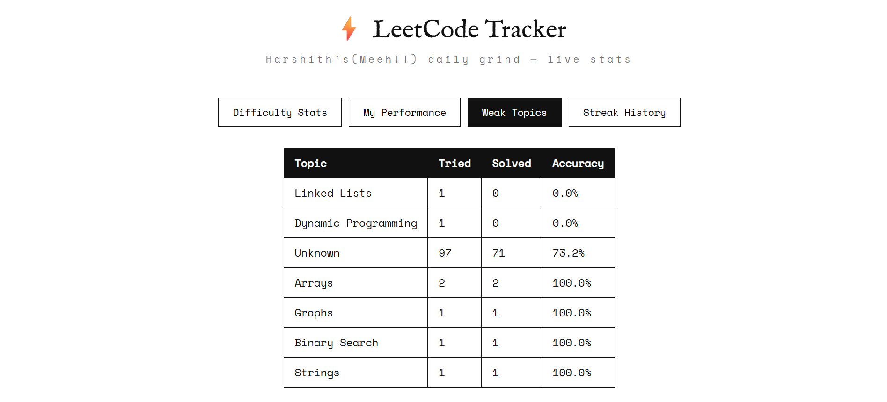

01 / THE ANTECEDENT
Before GrindLens became a product, it was this.
The first version was just a Python script fetching my LeetCode submissions, a MySQL database, a small PHP API, and a JavaScript dashboard to track streaks and weak topics. That script ran for months before I decided to turn it into a real product.

FIGURE 02.1 • Early Grind Tracker dashboard
Python • MySQL • PHP • JavaScript